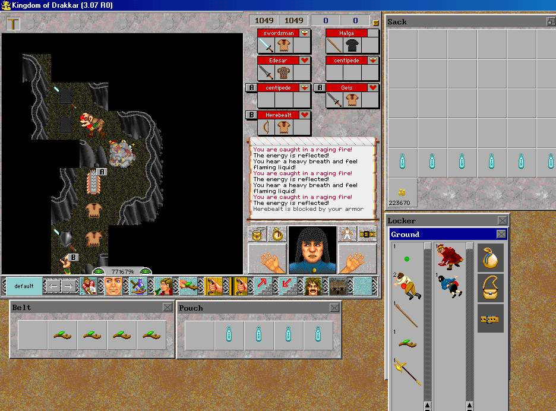
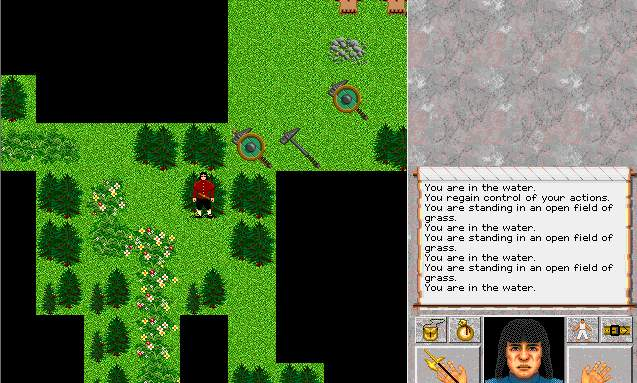

| Places 7 |
 |
| I once had an out of body experience. I was in the SouthWest Caves in Cobrahn when I was distracted by my busy ICQ list. When I looked back at the game, I saw myself die. I restored and raced back to get my Graagh Hally which fell to the ground upon me taking a dirt nap. I went to the spot of my death and looked at the ground. ?? I saw myself lying there besides my golden hally. Believe it or not. |
 |
| Just a little South of the Tree Town Stump. A few hexes report water. Must be some underground springs or something. |
| Back to Places 6. |
| To Places 8. |
| Back to Main Page. |